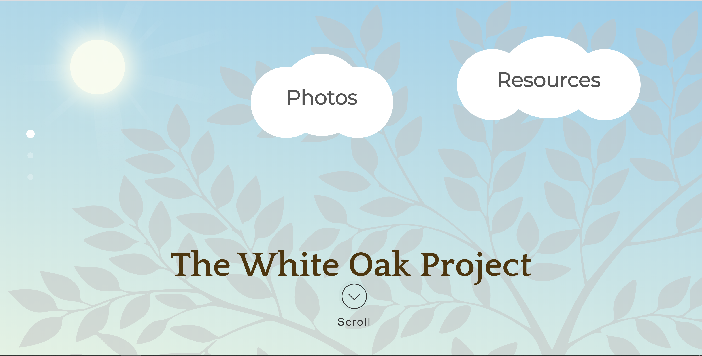
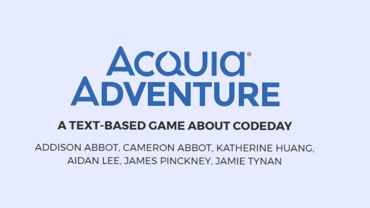

Chat Classifier
For our final project in Machine Learning, another student and I created a
classifier that can be trained on dialogue data and used to predict an inputted text's speaker. The two
specific applications tested were on the 2020 presidential debate and an SMS text message classifier.
Read our blog here.
IBRI Site
The Interdisciplinary Biblical Research Institute is a nonprofit Christian
organization that provides scholarly resources accessible all around the world. I was tasked with
updating the design and organization of the site, improving its accessibility to all kinds of users. I
learned the difficulties of working with such an outdated and massive web platform (97 GB!) and also how
to study the analytics of its web traffic.

White Oak Project
I worked with a nonprofit in New York to develop a site focused on their mission:
to restore the presence of white oak and white pine trees in New York State's Canal Regions. The
difficulty creating this site came with learning how to balance my own ambitions with the requirements
of what needed to be included. This project taught me the importance of strategic planning in
development.

Robotics Data Site
Up to this point, this site was the biggest project I had yet taken. The purpose
was to create a data center to keep track of student's fundraising for our local robotics team, Team
Paragon 571. Through this, my knowledge of php and sql grew tremendously. I learned a lot about back end
development as well as the intricacies of working with clients of diverse technical backgrounds.
AP CSP Portfolio
We were supposed to just make a Google site for AP Computer Science Principles,
but I used this opportunity to gain more experience by creating this portfolio throughout the year for
the class. I tried out Google's material design framework for this.
(view code)

Uber Eis
For many years I had dreams of making a small ice cream business! I'm still pretty
proud of this little website; the idea was that people could order ice cream and we would bring it
straight to them
(view code)

Acquia Adventure
I got the opportunity to go to CodeDay Boston, a 24 hour coding experience where
several team members and I got to turn an idea into a program. I worked with another young web developer
to create this site about the game we created, and I learned so much from her and the entire experience.
(view code)
Awana
I worked on creating a site for the Awana program at our church, Calvary Church in
West Hartford. The site was never really finished, but this site was my first experimentation after
leaving Google's mdl design framework.
(view code)
ThePiGuy
(Portfolio v2.0)
Here I pieced together my small fragments of web-dev knowledge to create a basic
site for myself. It's encouraging to see how far I've come :)
(view code)

First Website
(Portfolio v1.0)
This was the first site I created. I first discovered html playing around with
iChrome's customizable iFrame. I then learned more at W3Schools and there I found a growing interest for
web development.
(view
code)